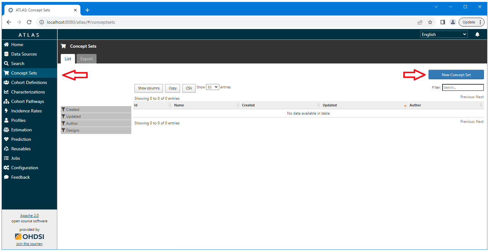

OHDSI Databricks User Group
OHDSI Databricks User Group How to Import and Export Concept Sets in Atlas
Introduction
This document provides a complete example of how to import and export a value set in Atlas.
Importing Concept Sets
This section will cover how to import a concept set from a json file representation of that concept set.
Source Files
We will be using the following two source files for this example. Download these files to the machine you will be using to access Atlas.
homeless-concept-set.json
not-homeless-concept-set.json
Open Atlas and navigate to the Concept Sets tab on the left side menu.

Enter a name for the concept set and select the Import tab.

Under the Import tab, select the Concept Set tab. Paste the
contents of the source file (for this example, the
homeless-concept-set.json file). Select the Overwrite Concept Set
Expression button in the lower right corner of the screen. Select the
Concept Set Expression tab to view the results of the import.

On the Concept Set Expression tab, select the green save icon in
upper right corner. Selecting the blue close (x) button will return you
to the Concept Set home page (the list of existing concept sets).

The
new concept set will now appear on this page. We can now repete the
process for the not-homeless-concept-set.json file.

After importing the not-homeless-concept-set file both concept sets will
appear on the main concept sets page.

Exporting Concept Sets
This section will cover how to export a concept set to a json file representation of that concept set.
Select the Concept Sets tab from the left hand menu. Select the Concept
Set to be exported.

Select the export tab.

Select the clipboard icon to copy the contents of the json
representation of the concept set to the clip board. Paste the copied
content into a text file.